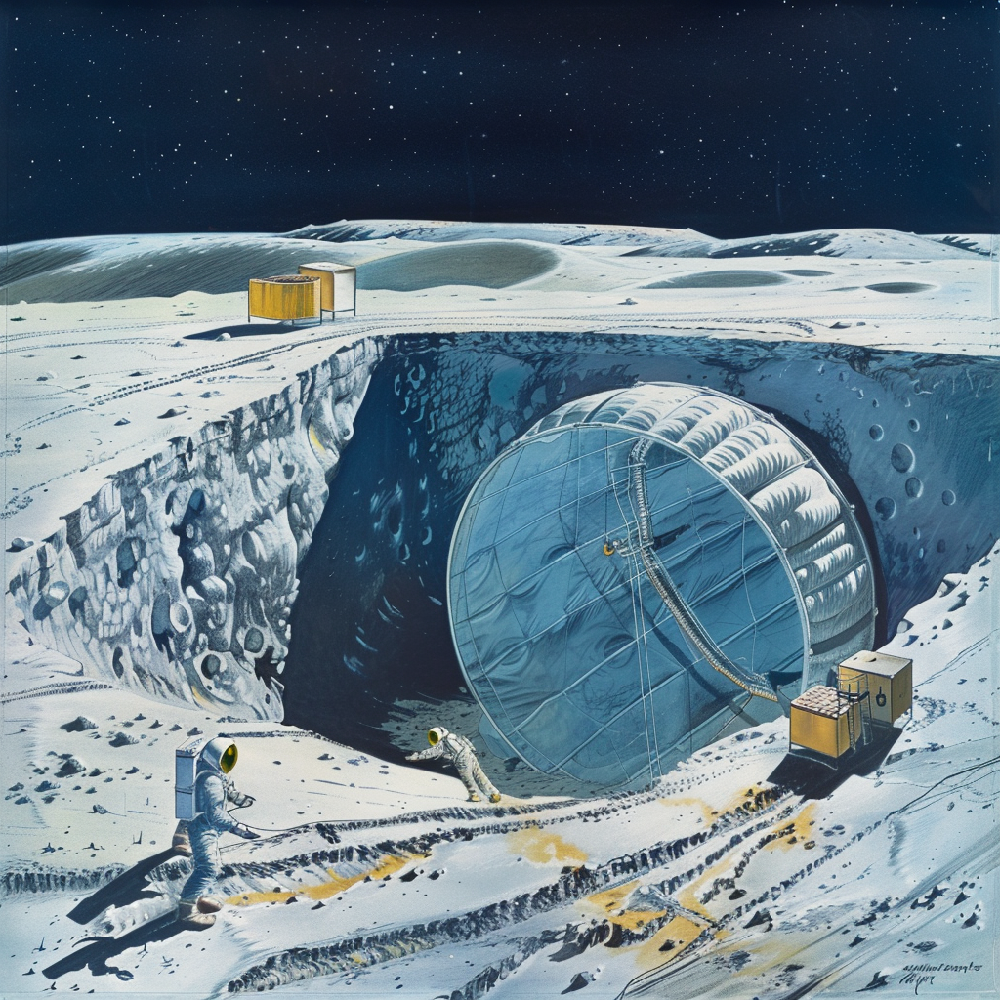

Inflating a Balloon Underground on the Moon

Introduction
Introduction to the concept of underground inflatable structures on the Moon, discussing the fundamental challenges and goals of such endeavors.
Excavation and Preparation
Digging a Cavity:
- Equipment: Use robotic excavators or other machinery to dig a cavity of the desired size in the lunar regolith.
- Stabilization: Ensure the walls and ceiling of the cavity are stable to prevent collapse during and after inflation.
Cavity Lining:
- Protective Lining: Line the cavity with materials that prevent regolith particles from damaging the inflatable structure during and after inflation.
- Sealing: Ensure the lining provides an airtight seal to maintain the integrity of the inflated space.
Inflatable Structure Design
Materials:
- Durability: Use materials like Vectran or Kevlar, which are strong, flexible, and resistant to punctures.
- Multi-Layer Construction: Employ multiple layers for added protection against abrasion and punctures from sharp regolith particles.
Inflation Mechanism:
- Controlled Inflation: Design an inflation system that can gradually and evenly inflate the structure to prevent uneven expansion and potential damage.
- Internal Supports: Include internal supports or an internal frame to help maintain the shape during inflation.
Pressure Management
Internal Pressure:
- Air Supply: Use compressed air or other gases to inflate the structure, ensuring the internal pressure is carefully controlled.
- Pressure Regulation: Include pressure regulation systems to maintain the desired pressure levels and prevent over-inflation.
External Pressure:
- Balancing Forces: Consider the external pressure exerted by the surrounding regolith to ensure the structure can withstand these forces without collapsing.
Deployment and Inflation Process
Unfolding:
- Initial Deployment: Carefully unfold and position the inflatable structure within the excavated cavity.
- Alignment: Ensure the structure is properly aligned and anchored to prevent shifting during inflation.
Gradual Inflation:
- Slow and Steady: Inflate the structure slowly to monitor for any signs of stress or damage.
- Monitoring Systems: Use sensors to monitor pressure, structural integrity, and alignment throughout the inflation process.
Post-Inflation Use
Habitat or Workspace:
- Living Quarters: Once inflated, the structure can serve as living quarters, providing an Earth-like atmosphere for inhabitants.
- Workspaces: Create workspaces for construction, research, and other activities without the need for space suits.
Environmental Control:
- Life Support Systems: Install systems to regulate temperature, humidity, and air quality within the inflated structure.
- Lighting: Use artificial lighting to mimic natural light cycles, enhancing the comfort and well-being of the inhabitants.
Challenges and Solutions
Structural Integrity:
- Challenge: Ensuring the inflatable structure can withstand the external pressure of the surrounding regolith.
- Solution: Use high-strength materials and internal supports to reinforce the structure.
Airtight Sealing:
- Challenge: Maintaining an airtight seal to prevent air leaks.
- Solution: Employ robust sealing techniques and regularly inspect the structure for potential leaks.
Regolith Management:
- Challenge: Preventing regolith from damaging the inflatable structure.
- Solution: Line the cavity with protective materials and use smooth, abrasion-resistant layers for the inflatable.
Architectural Design for Subterranean Lunar Base
Introduction
Description of the lunar base concept, its significance and challenges, etc.
Habitat Structure
Detailed description of habitat design including pressure, shape, framework, and reinforcement strategies.
Materials
Information on construction materials, insulation, and interior materials used in the habitat.
Layout and Organization
Explanation of modular design, living quarters, recreational areas, laboratories, medical facilities, and central hub.
Environmental Control and Life Support
Details on air quality systems, water management, and energy management.
Modular Layout Example
Example layout for a single habitat module showing all components and their arrangements.
Scalability and Future Expansion
Strategies for modular expansion and resource utilization plans for growth and efficiency.
Enhancements and Innovations
Details on 3D printing applications and robotic assistance for construction and maintenance.
Summary
Overall summary of the design, visualizing aids and models, and final thoughts on the project's impact and future possibilities.
Summary
For an inflatable lunar habitat at the specified depth, the best materials combine structural strength, thermal insulation, and resistance to the harsh lunar environment. The multi-layer construction would typically include:
- Kevlar and Vectran: for the outer structural layer.
- Aluminized Mylar: for thermal control and radiation protection.
- Polyurethane-coated fabrics or ETFE: for airtightness.
- Aerogel: for additional thermal insulation.
This combination ensures that the habitat is robust, energy-efficient, and capable of providing a safe and comfortable environment for its inhabitants. By leveraging Earth-like techniques for construction and habitation, and integrating advanced systems for water treatment, environmental control, and safety, the habitat aims to provide a stable and comfortable living environment. The use of in-situ resources, advanced recycling systems, and hydroponic gardens further enhances the base's sustainability, reducing dependence on Earth-based resupply missions. These features, combined with robust governance, effective emergency protocols, and a strong focus on community well-being, ensure that the base is well-equipped to support long-term habitation and research activities on the Moon.
By drawing inspiration from the successful strategies employed at the Amundsen-Scott South Pole Station, this lunar base project aims to overcome the unique challenges of the lunar environment. It seeks to create a beacon for future generations, inspiring new thinkers and engineers to envision and realize the possibilities of human settlement beyond Earth.